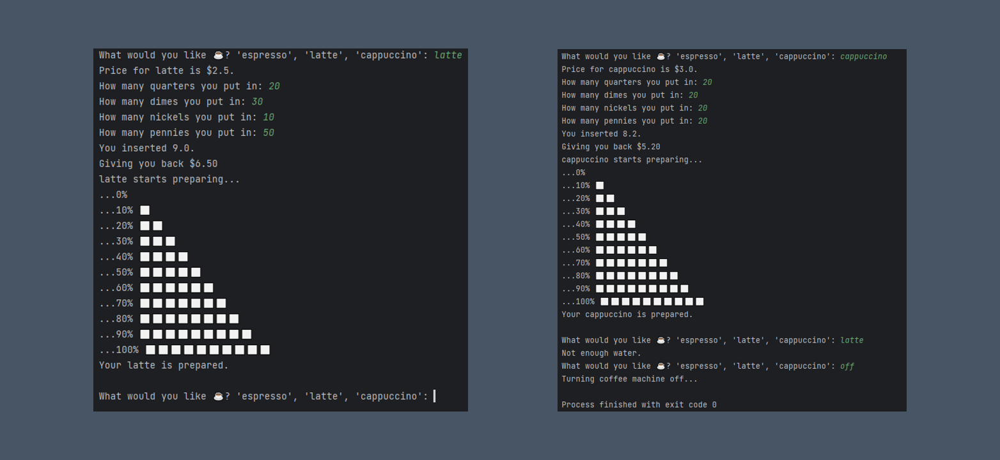

Coffee Machine
This Python script simulates a coffee machine, allowing users to choose from a menu of espresso, latte, or cappuccino. Users can also check the machine's resource levels or turn it off. When ordering, users can insert coins, and if the payment is sufficient and resources are available, the machine prepares the chosen drink and updates its resources. It's a fun way to virtually interact with a coffee machine and enjoy a freshly brewed cup of coffee.